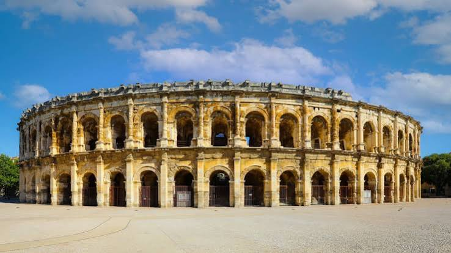

Arènes de NîmesAmphithéâtre romain


⟹ Sites Emblématiques ⟸
Nemausus, une colonie prospère. À la fin du Ier siècle de notre ère, Nîmes, la Colonia Augusta Nemausus, est l’une des villes les plus riches de la Gaule narbonnaise. Située sur la voie Domitienne, entre l’Italie et l’Espagne, elle possède déjà un vaste rempart offert par Auguste, un forum dominé par la Maison Carrée et un sanctuaire autour de la source sacrée. Il lui manque encore un grand édifice de spectacle : l’amphithéâtre vient couronner ce programme monumental.
Un chantier de l’époque flavienne. Les Arènes sont construites vers 90-100 de notre ère, sous la dynastie des Flaviens, quelques années seulement après l’inauguration du Colisée de Rome en 80. Elles sont presque contemporaines de l’amphithéâtre d’Arles, très proche par son architecture. Une inscription retrouvée sur le monument mentionne un certain Titus Crispius Reburrus, dans lequel certains historiens voient l’architecte ou l’entrepreneur de l’ouvrage.
Une architecture pensée pour la foule. De plan elliptique, l’amphithéâtre mesure environ 133 mètres de long sur 101 mètres de large pour une hauteur de 21 mètres. Sa façade se compose de deux niveaux de soixante arcades, surmontés d’un attique. À l’intérieur, 34 rangs de gradins pouvaient accueillir environ 24 000 spectateurs. Un réseau très élaboré de galeries, de couloirs et d’escaliers, appelés vomitoires, permettait de remplir ou d’évacuer l’édifice en quelques minutes seulement.
Une société en gradins. Les places n’étaient pas distribuées au hasard. Les gradins étaient divisés en quatre zones superposées, les maeniana, qui reflétaient la hiérarchie sociale : les notables et magistrats occupaient les premiers rangs, au plus près de l’arène, tandis que les catégories les plus modestes prenaient place tout en haut. Des consoles percées, encore visibles au sommet de la façade, recevaient les mâts qui soutenaient un immense voile, le velum, protégeant le public du soleil.

Un décor discret mais symbolique. Le monument est sobre, mais quelques sculptures retiennent l’attention : deux protomés de taureaux surmontent l’entrée nord, tandis qu’un relief représente la louve allaitant Romulus et Rémus, rappel des origines de Rome. D’autres bas-reliefs montrent des combats de gladiateurs. Ces images affirmaient l’appartenance de Nîmes au monde romain et la nature des spectacles donnés dans l’arène.
Gladiateurs et chasses. L’amphithéâtre accueillait les munera, combats de gladiateurs aux armements codifiés (rétiaire, mirmillon, thrace…), mais aussi les venationes, chasses et combats d’animaux sauvages, et parfois l’exécution publique de condamnés. Offerts par des magistrats ou de riches notables, ces spectacles gratuits servaient leur prestige politique. Avec la christianisation de l’Empire et le déclin des finances publiques, ils disparaissent progressivement aux IVe et Ve siècles.
Une forteresse au haut Moyen Âge. Dès la fin de l’Antiquité, les Wisigoths, maîtres de Nîmes à partir du Ve siècle, transforment l’amphithéâtre en place forte : les arcades sont murées, des tours sont ajoutées et un fossé l’entoure. Le monument devient le réduit défensif de la ville. Au VIIIe siècle, les chroniques évoquent les combats liés aux incursions sarrasines puis à la reconquête franque de Charles Martel, qui aurait tenté d’incendier la forteresse.
Les chevaliers des Arènes. Aux XIe et XIIe siècles, les Arènes forment le castrum Arenarum, siège des vicomtes de Nîmes. Un groupe de familles nobles chargées de sa défense, les « chevaliers des Arènes », y réside et constitue une véritable institution militaire et politique de la ville, qui jouera un rôle dans les débuts du consulat nîmois.
Un quartier dans l’amphithéâtre. Après la perte de sa fonction militaire, l’édifice est peu à peu envahi par l’habitat. À la fin du Moyen Âge et jusqu’au XVIIIe siècle, un véritable quartier s’y développe, avec une centaine de maisons, des ruelles, et au moins une chapelle, abritant plusieurs centaines d’habitants. Paradoxalement, cette occupation a préservé la structure antique, les maisons s’appuyant sur les murs sans les détruire entièrement.
Le dégagement du monument. À la fin du XVIIIe siècle, l’intérêt croissant pour l’Antiquité conduit à vouloir libérer l’amphithéâtre. Les expropriations et démolitions sont menées au début du XIXe siècle, sous l’Empire, et rendent aux Arènes leur aspect antique. Le monument figure dès 1840 sur la première liste des Monuments historiques, et des restaurations successives consolident gradins et façades.
La tauromachie, une tradition nîmoise. En 1853, les Arènes accueillent leur première corrida « à l’espagnole ». Nîmes devient dès lors l’une des grandes villes taurines de France, avec la course camarguaise, très ancrée dans la culture locale. La Feria de Pentecôte, créée en 1952, puis la Feria des Vendanges, attirent chaque année des foules considérables. Ces spectacles restent au cœur des débats de société, entre attachement à une tradition régionale et remise en cause de la corrida.
Un amphithéâtre toujours vivant. Au XXe et au XXIe siècle, les Arènes accueillent concerts, reconstitutions historiques comme les Grands Jeux Romains, événements sportifs et culturels. Une couverture amovible a même permis un temps des usages hivernaux. Cette vocation de lieu de rassemblement prolonge, sous d’autres formes, la fonction du monument depuis près de deux mille ans.
Un vaste chantier de restauration. Depuis 2009, la Ville de Nîmes conduit un programme pluriannuel de restauration, travée par travée, pour traiter les pierres dégradées par la pollution, l’eau et les usages. En 2018, le musée de la Romanité, construit face aux Arènes, a ouvert ses portes : il présente les collections antiques de Nîmes et offre, depuis son toit-terrasse, un point de vue remarquable sur l’amphithéâtre.
L’amphithéâtre le mieux conservé du monde romain. Si d’autres amphithéâtres sont plus vastes, les Arènes de Nîmes sont considérées comme l’un des mieux conservés de tout l’Empire : leur façade est presque intacte et leurs circulations sont parfaitement lisibles. Avec la Maison Carrée, la Tour Magne et le Pont du Gard, elles font de Nîmes et de sa région l’un des plus riches ensembles romains d’Europe.